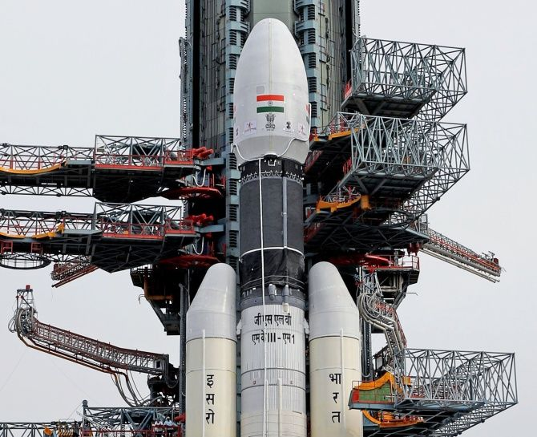

Space Technology
In The Service of Mankind
In The Service of Mankind
- Upcoming
- Timeline

Launch Demonstrations
Mars Orbiter Mission
Mars continues to be an object of keen interest to scientists in the context of planetary evolution and extra-terrestrial life. Based on our understanding of Mars, which was thought to be probably a warm and wet planet earlier, is now seen to be dry with a thin atmosphere. How this evolution has taken place is still a topic of research. In this backdrop, the Indian Mars Orbiter Mission carried the following five scientific payloads:
Mars continues to be an object of keen interest to scientists in the context of planetary evolution and extra-terrestrial life. Based on our understanding of Mars, which was thought to be probably a warm and wet planet earlier, is now seen to be dry with a thin atmosphere. How this evolution has taken place is still a topic of research. In this backdrop, the Indian Mars Orbiter Mission carried the following five scientific payloads:
- Mars Color Camera (MCC)
- Thermal Infrared Imaging Spectrometer (TIS)
- Methane Sensor for Mars (MSM)
- Mars Exospheric Neutral Composition Analyser (MENCA)
- Lyman Alpha Photometer (LAP)
TeLEOS-2
The TeLEOS-2 satellite is developed under a partnership between DSTA (representing the Government of Singapore) and ST Engineering. Once deployed and operational, it will be used to support the satellite imagery requirements of various agencies within the Government of Singapore. TeLEOS-2 carries a Synthetic Aperture Radar (SAR) payload. TeLEOS-2 will be able to provide all-weather day and night coverage, and capable of imaging at 1m full-polarimetric resolution.
The TeLEOS-2 satellite is developed under a partnership between DSTA (representing the Government of Singapore) and ST Engineering. Once deployed and operational, it will be used to support the satellite imagery requirements of various agencies within the Government of Singapore. TeLEOS-2 carries a Synthetic Aperture Radar (SAR) payload. TeLEOS-2 will be able to provide all-weather day and night coverage, and capable of imaging at 1m full-polarimetric resolution.
Recent Updates : Awaiting Chandrayaan-3 mission details

Our Partners